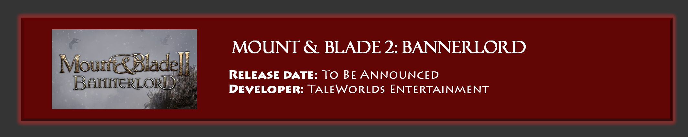
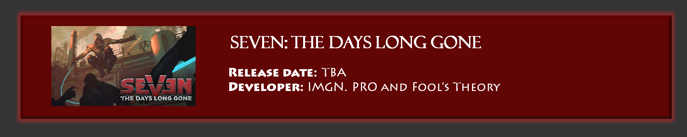

South Park: The Fractured But Whole
Release date: October 17, 2017
Developer: South Park Digital Studios, Ubisoft San Francisco
Link: Official site
The sequel to comic fantasy RPG The Stick of Truth, The Fractured But Whole is taking a stab at superhero fiction this time around. Showrunners Matt Stone and Trey Parker are back on as writers, but Ubisoft San Francisco is taking the development reins from Obsidian. Even so, it looks to be a similarly structured game, a streamlined RPG romp through a ridiculous small town that uses an active turn-based combat system, a la Paper Mario. If you like South Park’s crass, topical humor, this one is probably a safe bet.



